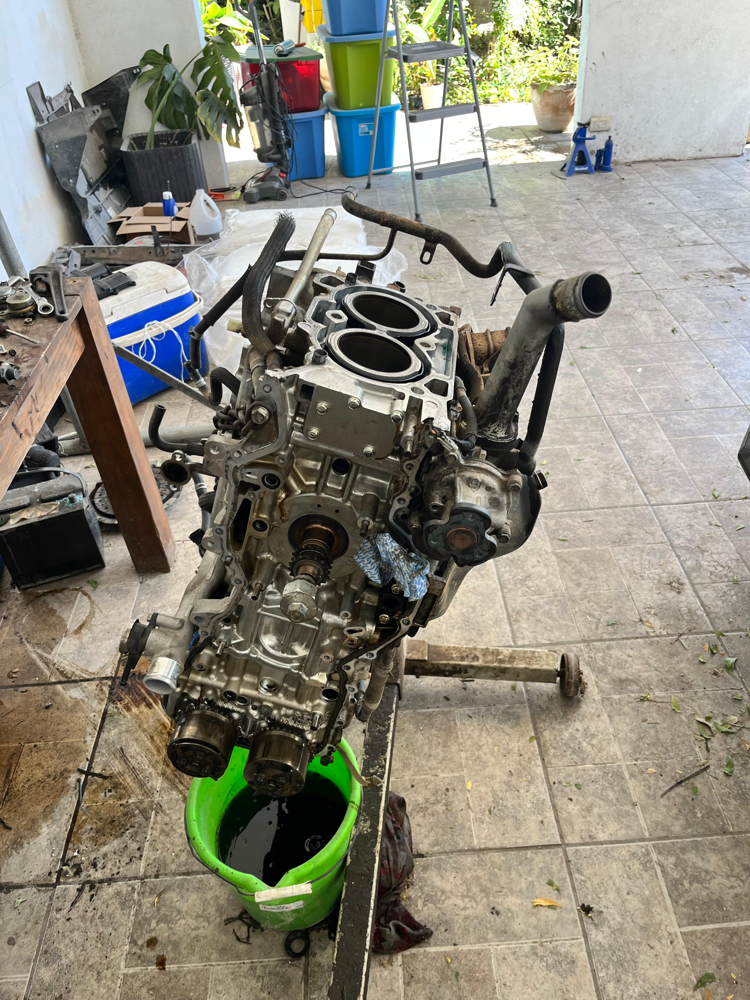
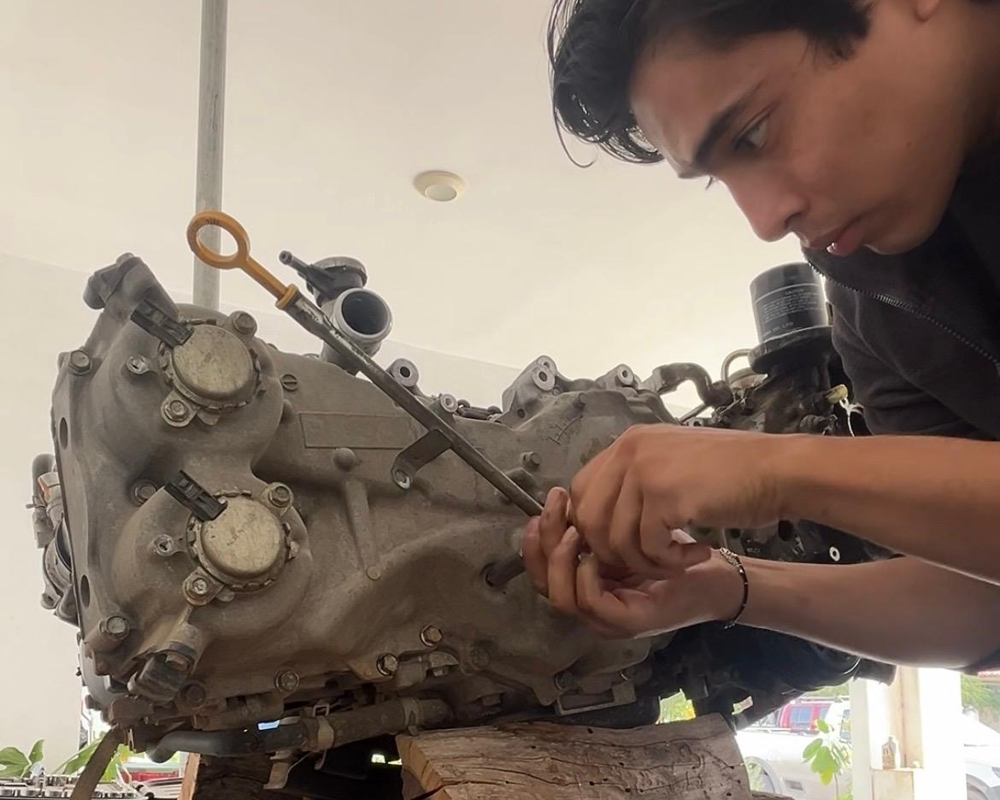
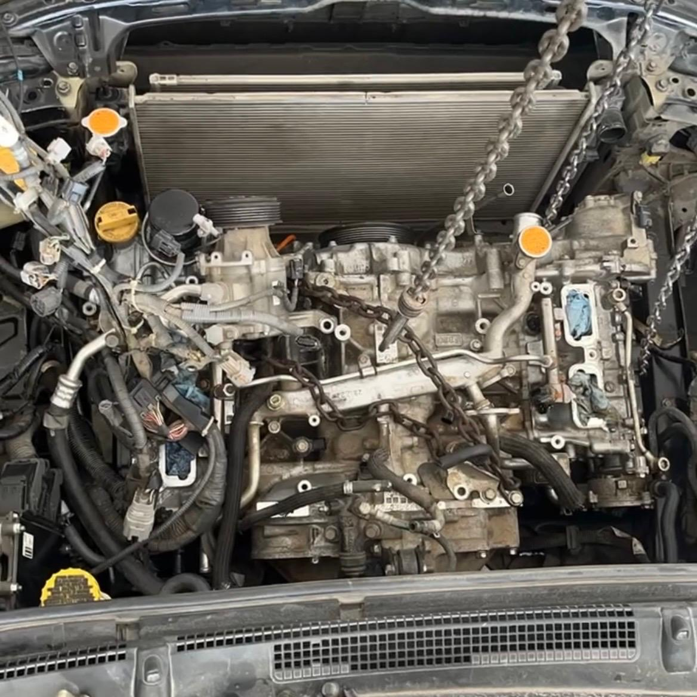

Personal project · December 2024
Subaru FB20 — Engine diagnostics & top-end repair
Engine assembly, diagnostic reasoning and mechanical verification.
Engineering problem
An external oil leak and perceived power loss on a 2017 Subaru Impreza prompted repeated inspection after cleaning. The leak was traced to the left cylinder-head gasket; compression checks were normal.
My contribution
I planned and executed the diagnosis, left-head removal, sealing surface preparation, gasket and intake seal replacement, torque sequence, timing-chain alignment and reassembly. Chemical cleaning was outsourced; occasional assistance was limited to handling components.
Testing & verification
Before startup I checked timing marks, assembly, connections and fluid levels. After startup I inspected for leaks and monitored the repaired area during subsequent vehicle use.
Results & limitations
Approximately 20,000 km of follow-up, from 130,000 to 150,000 km, without recurrence of the oil leak. This is field follow-up, not a controlled durability test. No measured power gain, dyno data or full engine rebuild is claimed.
Tools & methods
Project gallery


